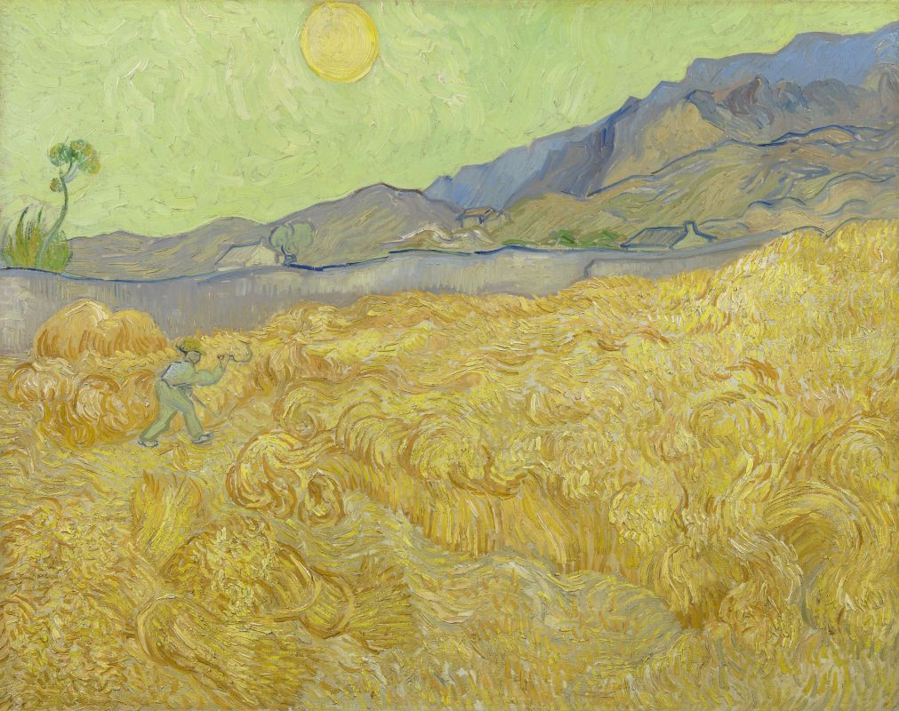
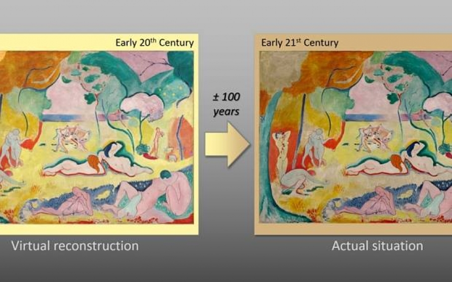

«Подсолнухи» Ван Гога увядают. Жёлтый цвет становится коричневым
Музей Ван Гога в Амстердаме пересмотрит условия экспозиции культовой картины «Подсолнухи». Необходимость в этом возникла после того, как эксперты выяснили, что лепестки и стебли на полотне «увядают» — из жёлтых становятся оливково-коричневыми. Проблема в том, что художник использовал светочувствительную краску.

Сложное рентгеновское сканирование холста выявило, что Винсент Ван Гог применял два разных вида хромового жёлтого, один из которых более подвержен деградации под воздействием света. Изменения на картине, написанной в 1889 году, пока не видны человеческому глазу. Но со временем цвета утрачивают яркость на бледно-жёлтом фоне — в тех фрагментах, где художник подмешал чувствительный пигмент для достижения нужного зелёного оттенка.
Оранжевые области фона вряд ли значительно пострадают, поскольку Ван Гог использовал менее чувствительную жёлтую краску с более низким содержанием серы.
«Очень сложно сказать, сколько времени потребуется, чтобы изменения стали очевидными. Это будет во многом зависеть от внешних факторов», — сказал эксперт Фредерик Ванмеерт из Университета Антверпена, принимавший участие в исследованиях. Учёные определили области, где Ван Гог применил светочувствительный жёлтый хром. Этим участкам реставраторы со временем должны будут уделять особое внимание. Кроме того, выявлены очень маленькие фрагменты полотна, где использованы изумрудно-зелёный пигмент и свинцовый сурик — они тоже рано или поздно побледнеют.
Команда голландских и бельгийских учёных в течение двух лет проводила исследования по заказу Музея Ван Гога в Амстердаме, где размещается крупнейшая в мире коллекция работ художника. Пять лет назад, стремясь сохранить свои 200 картин и 400 рисунков, учреждение приглушило освещение в выставочных залах.
О том, что на картинах Винсента Ван Гога выгорает жёлтый цвет, учёные из Франции, Бельгии и Соединённых Штатов сообщили ещё три года назад. По их мнению, выцветание угрожает многим шедеврам импрессионистов, постимпрессионистов и ранних модернистов, которые широко применяли этот пигмент.
Нынешние исследования будут иметь значение для целого ряда работ постимпрессиониста. После обработки результатов кураторы будут более пристально следить за изменениями цветов на других картинах. Ван Гог часто использовал хромовый жёлтый, так что обесцвечивание, как полагают специалисты, может грозить и другим полотнам. Судя по всему, изменение внешнего вида полотен не было неожиданностью для самого Ван Гога. «Картины увядают как цветы», — заметил он в одном из своих многочисленных писем к брату Тео.
Автор: Влад Маслов15 АВГУСТА